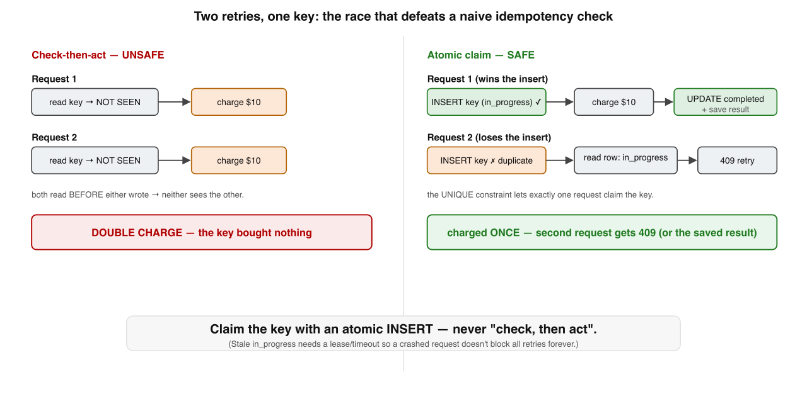
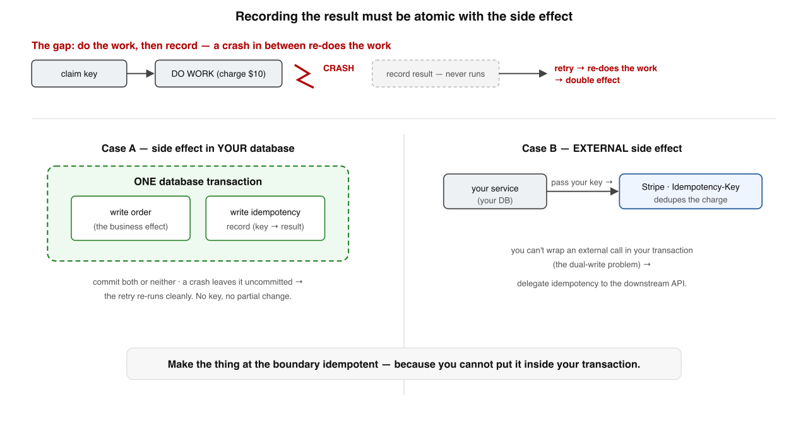
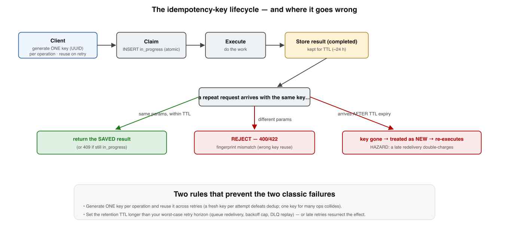

Your bar: the happy path is two lines — "seen this key? return the saved result; new? do the
work and save it." It is correct and it hides every hard part. Get any of the four edges wrong and you
double-charge a customer. This goes to the floor. Grounded in Stripe's idempotency design2
and Kleppmann's DDIA ch. 8 & 11.1
One sentence holds the whole deep dive. Each level unpacks one chip of it:
An idempotency key works only if you claim it atomicallyrecord the result atomically with the effectfingerprint the request bodyand retain longer than you retry
Memorise these four boxes. Each level below is one of them — in the order a request actually moves through them.
1
The race — two retries, one key
The oldest bug in the book: check-then-act across two actors is never safe.

The idempotency-key race. Naive check-then-act lets two concurrent retries both see "not seen" and both execute — a double charge. The fix makes claiming the key atomic: the first INSERT wins, and the loser sees an in-progress or completed record.
The fix turns "check, then act" into "act (claim) atomically, then branch" — an INSERT into a table with UNIQUE(account_id, idempotency_key) and a status column:
The atomic INSERT is the linchpin. SELECT … FOR UPDATE or an advisory lock work too, but unique-constraint insert is the simplest correct primitive.
The bug Check-then-act: both retries read the store, both see "not seen" (neither wrote yet), both charge. The key bought nothing.
The fixINSERT … status=in_progressbefore any work. The unique constraint guarantees exactly one racer wins the claim.
Recovery path A crash mid-claim leaves a stuck in_progress row. A locked_at lease lets an old one be reclaimed (Stripe's recovery points).
✗ "Just check the store, then do the work if it's new"
✓ Two concurrent retries both pass the check — claim atomically with a unique INSERT
🏁 Memory rule: Don't check-then-act — claim the key atomically; the first INSERT wins, the loser returns the saved result or a 409.
Memory check
Why does check-then-act double-execute? → both racers read "not seen" before either writes
What makes the claim atomic? → a UNIQUE-constraint INSERT (or FOR UPDATE / advisory lock)
What does the loser return for an in-progress sibling? → 409 Conflict, not a second execution
What rescues a crashed in_progress row? → a locked_at lease / timeout that reclaims it
2
Atomicity — record the result with the side effect
Solve the race and a deeper crash window remains: do the work → (crash) → never record it.

Atomicity, two cases. When the side effect is in your own database, wrap the business write and the idempotency record in ONE transaction. When it's an external call, you can't — so delegate idempotency to the downstream API by passing the key through.
⚛️ The lesson: Recording "this key is done, here is the result" must be atomic with the side effect itself. If a crash can tear them apart, the key does not protect you.
The idempotency record is a ledger entry committed alongside the work it describes — or, when external, the downstream's own key is that ledger.
Case A · local Wrap the business mutation + the idempotency record in one transaction. A mid-way crash leaves it uncommitted; the retry re-runs from scratch — Book 2's all-or-nothing.
Case B · external You can't make a network call atomic with a local write (the dual-write problem). So delegate: pass your key through to the downstream's idempotency mechanism.
The boundary rule Make the thing at the boundary idempotent, because you can't wrap it in your transaction. Stripe's Idempotency-Key header is exactly this.
No downstream support? You're forced into reconciliation — detect and refund the double. Hence "is this API idempotent?" is the first question a senior asks of any payment/messaging integration.
✗ "Do the work, then save the key in a second step"
✓ A crash between them re-executes — record must commit atomically WITH the effect (or be delegated)
⚛️ Memory rule: Where the effect lives decides everything — local effect → one transaction; external effect → delegate idempotency to the downstream.
Memory check
What's the crash window the race fix doesn't cover? → work done, but result never recorded
Case A solution in one phrase? → business write + idempotency record in one transaction
Why can't Case B use a transaction? → no txn spans your DB and an external API (dual-write)
The fallback when downstream has no idempotency? → reconciliation: detect and refund the double
3
What to store — and the same-key-different-body trap
A key alone is not enough state. Without a fingerprint, keys return confidently wrong results.
Field
Why it's there
idempotency_key + account_id
the unique claim — scoped, never global
request_fingerprint
a hash of the request parameters (the trap-catcher)
status
in_progress / completed — the §1 state machine
response_code, response_body
the saved result to replay
locked_at, created_at
recovery lease (§1) and TTL (§4)
The fingerprint turns the key into a contract: reuse a key with different parameters and the server rejects it rather than silently returning the first request's response.
The trap Client reuses a key for a different request (new amount/recipient). The naive server returns the first response — confidently wrong.
The catch Store hash(params). On every repeat, compare. Match → genuine retry. Differ → reject with 400.
Scope, not global The claim is (account_id, key) — scoped to avoid cross-tenant collisions and bound the keyspace you store.
Replay payload Save response_code + response_body so a retry-after-success replays the identical answer, byte for byte.
✗ "Same key → always return the saved response"
✓ Only if the request fingerprint matches; a differing body is a client bug — reject it
🧾 Memory rule: Fingerprint the body — one key names one operation; same key + different params is a contract violation, not a retry.
Memory check
What bug does the fingerprint catch? → key reuse for a different request body
Match vs differ → what does the server do? → apply §1 logic vs reject with 400
Why scope the key per (account, endpoint)? → avoid cross-tenant collisions; bound the keyspace
Why store response_body? → to replay the identical answer on a retry-after-success
4
The key's lifecycle — scope, generation, and the TTL hazard
Pull it together as a lifecycle and two more decisions surface: how keys are generated, and how long they live.

The idempotency-key lifecycle. The client generates one key per logical operation and reuses it on retries. The server claims it, executes, and stores the result for a retention window — after which the same key is treated as brand new, which is a hazard if a retry arrives late.Pick the TTL from your actual redelivery bounds — max queue delay, retry-backoff cap, DLQ replay window — not a round number.
Generation One key per logical operation (a UUID), reused on every retry. A fresh key per attempt defeats dedup entirely.
Scope Per (account, endpoint), never global — avoids cross-tenant collisions and bounds storage.
Only for unsafe ops Keys are for POST-style creates and charges. GET/PUT/DELETE are already idempotent — a key there is noise.
The TTL hazard After the window expires the same key is brand new. A retry arriving late (queue stuck 25h, long backoff) re-executes — a double charge.
✗ "Generate a fresh idempotency key on each retry" / "any 24h TTL is fine"
✓ Same key across retries; retention must comfortably exceed your worst-case retry horizon
⏳ Memory rule: One key per operation, reused on retries, scoped per account — and retain it longer than your slowest possible retry.
Memory check
Two classic generation bugs? → fresh key per attempt; one key across different ops
Which HTTP verbs don't need a key? → GET, PUT, DELETE — already idempotent
What makes a late retry double-charge? → it arrives after TTL expiry; key treated as new
How do you pick the TTL? → from actual redelivery/backoff/DLQ bounds, not a round number
5
Where idempotency keys stop helping
They are not magic. Knowing the edges is the senior part.
The whole topic in one frame: there is no exactly-once delivery; there is at-least-once + an idempotent receiver. The key is one way to be that receiver.
One op, one store A key makes one call safe against one system. Not a distributed-transaction substitute; no exactly-once across a chain — each hop needs its own key/dedup.
Already idempotent?SET balance = 100, DELETE /orders/42, "mark invoice paid" are naturally repeat-safe. Don't add machinery where the property already exists.
Producer can't be safe → dedupe at the consumer If the effect is non-idempotent, external, and downstream offers no hook, move the guarantee to the receiver: process each event id once.
The unifying truth Exactly-once is always built as at-least-once plus an idempotent/deduplicating endpoint — the key is the most common way to be that endpoint.
✗ "An idempotency key gives me exactly-once across my whole pipeline"
✓ It guards one boundary; a chain of three services is three places to get it right
🧭 Memory rule: Claim atomically, record atomically with the effect, fingerprint the request, retain longer than you retry — and the key only protects the one boundary it guards.
Memory check
How many boundaries does one key cover? → exactly one op against one store
When can you skip the key? → when the operation is already idempotent
Producer can't be made safe — where does dedup move? → to the consumer/receiver (dedup store)
Reading builds fluency; recall builds storage. Before the quiz, fix the spine. Every edge is the same discipline applied at a different point in the request's life:
Edge
The failure if you skip it
The discipline
① Race
Two retries both pass the check → double charge
Claim atomically (unique INSERT)
② Atomicity
Crash between work and record → re-execute
Record WITH the effect (one txn / delegate)
③ Fingerprint
Same key, new body → confidently wrong result
Hash the body; reject mismatch with 400
④ TTL
Late retry after expiry → key gone → re-execute
Retain longer than your worst retry horizon
⑤ Scope of help
Assuming one key = exactly-once everywhere
One boundary only; dedup each hop / the consumer
Interview — pick your bar
Answer out loud in ~60s, then reveal. Core = recall · Senior = trade-offs & failure modes · Staff = synthesis under ambiguity · System Design = open design round (a different axis, not a harder level).
What is an idempotency key and what problem does it solve?
Hit these points: a client-generated unique token attached to a request so the server can recognize a retry of the same logical operation rather than a new one → it exists because a network call can time out after succeeding, so the client must be able to safely retry without re-executing the effect → the server records the key on first execution and, on any later request with the same key, replays the original result instead of re-running the side effect → this turns a non-idempotent operation ("charge $10", "create order") into one that's safe to retry → it is per-operation, per-store dedup — not a delivery guarantee.
Beyond the key itself, what do you store in the idempotency record — and why is a bare key not enough?
Hit these points: the scoped claim (account_id + key), a request_fingerprint (hash of the params), a status (in_progress/completed), the saved response_code/body to replay, and created_at/locked_at for TTL + lease → a bare key can't catch the same-key-different-body trap: the fingerprint lets you tell a genuine retry (params match → replay) from a key-reuse bug (params differ → reject 400) instead of returning a confidently-wrong cached result → the saved response lets a retry return the original outcome verbatim → scoping by account prevents one tenant's key from colliding with another's.
Why is "exactly-once delivery" impossible, and what's the real guarantee?
Hit these points: an unacked send forces resend (risk duplicate) or no resend (risk loss) — no third option; that's the Two Generals problem → so exactly-once delivery over an unreliable network can't exist → the achievable guarantee is at-least-once delivery + an idempotent (or deduplicating) endpoint = exactly-once effect → the idempotency key is the most common way to make an endpoint that idempotent → always pin down "exactly-once across which boundary?" — the property is per receiver, not a magic end-to-end promise.
Which operations don't need an idempotency key, and why?
Hit these points: operations that are already idempotent — an absolute write SET balance = 100, DELETE /orders/42, "mark invoice paid", and in general well-behaved GET/PUT/DELETE → re-applying them yields the same state, so a retry is harmless and the extra machinery is just noise → keys are for the unsafe, non-idempotent ops: relative mutations like "charge $10" or "create an order" (which would duplicate) → the design instinct: prefer making the operation naturally idempotent (absolute, not relative) before reaching for a key.
Two retries with the same key hit two app servers at the same instant. Why does the naive design double-charge, and how do you fix it?
Hit these points: the naive design is check-then-act: both requests read the store, both see "not seen" before either writes, so both proceed and charge — a classic race → the fix is an atomic claim: a UNIQUE(account_id, key)INSERT … status=in_progress performed before any work, so exactly one racer wins the insert → the loser catches the unique-violation, reads the row, and branches: completed → replay the saved response; in_progress → return 409 (retry later) → alternatives: SELECT … FOR UPDATE or an advisory lock → the principle: replace check-then-act with a single atomic conditional write.
You've solved the race. The server still occasionally double-charges. Where's the remaining window?
Hit these points: a crash between performing the side effect and recording the completed result — the effect happened, no completion record exists, so the retry re-runs it → the fix: recording the result must be atomic with the side effect, not a second step → for a local effect, wrap the business mutation and the idempotency record in one DB transaction → red flag: "just save the key right after the charge" — that's two operations a crash can tear apart, which is the dual-write problem in miniature.
When can you wrap the side effect and the idempotency record in one transaction — and when can't you?
Hit these points:Case A — local effect: the business mutation and the idempotency record live in the same database, so a single transaction commits both or neither — clean and atomic → Case B — external effect (e.g. a Stripe charge): no transaction can span your DB and a remote API — that's the dual-write problem — so you delegate by passing your own key through to the downstream's idempotency mechanism → if the downstream has no idempotency support, fall back to reconciliation: detect duplicates after the fact and refund/compensate → the first question to ask of any payment integration: "is this API idempotent, and how do I pass a key?"
A request claims the key (in_progress) then the process crashes. What happens to future retries, and how do you prevent a permanent outage?
Hit these points: the orphaned in_progress row blocks every future retry with a permanent 409 — the operation can never complete, a self-inflicted outage on that key → prevention is a recovery lease: store locked_at and treat an in_progress record older than a timeout as reclaimable, so a later retry can take it over and resume → ideally pair with recovery points (Stripe's model) so a retry resumes a half-finished request rather than restarting it blindly → the lease timeout must exceed the operation's worst-case legit duration, or you'll reclaim a still-running request and risk concurrent execution.
How do you choose the retention TTL, and what goes wrong if it's too short?
Hit these points: records can't live forever (storage growth), so they expire — Stripe keeps keys ≈ 24h (illustrative) → after expiry the same key is treated as brand new, so a late retry — a message stuck in a queue 25h, a long backoff, a DLQ replayed days later — re-executes and double-charges → so the TTL must comfortably exceed your worst-case retry horizon: max queue redelivery delay + retry-backoff cap + DLQ replay window, with margin → derive it from those actual bounds, not a round number → the staff framing: the TTL is a contract between your dedup window and every retry source upstream — if any source can outlive the window, the guarantee is silently void.
A team says "we added idempotency keys, so the whole payment pipeline is exactly-once." Push back.
Hit these points: a key guards one operation against one store — it is not a distributed-transaction substitute and gives no exactly-once across a chain of services → three services in a row = three independent dedup guards, each with its own key, store, and TTL; a gap in any one re-opens the duplicate window → the underlying theorem: there is no exactly-once delivery; there is at-least-once delivery + an idempotent/deduplicating endpoint = exactly-once effect, scoped per endpoint → also name the TTL hole, the downstream-without-idempotency hole, and the dual-write hole → the correct claim is "each step is individually idempotent," verified end to end — not "the pipeline is exactly-once."
Producer-side keys vs consumer-side dedup — how do you decide where to put the guarantee?
Hit these points: apply the end-to-end argument — put the guarantee at the layer that actually has the knowledge to enforce it → producer-side idempotency keys work when the caller can generate a stable key and the receiving service owns an atomic store to claim it → but if the producer is external, non-idempotent, and offers no hook (you can't make it send a stable key or pass one downstream), you can't fix it there — move dedup to the consumer, which sees every delivery and can dedup on a natural business key or content hash → trade-off: producer keys are precise but require cooperation; consumer dedup is robust to uncooperative producers but needs a good dedup key and a window sized to redelivery → the staff move: choose by who holds the stable identifier and atomic store, not by habit.
Design-round framework — drive any idempotency / safe-retry prompt through these, out loud:
Clarify: which operations are non-idempotent? can the client generate a stable key? local vs external effect?
Atomic claim: UNIQUE(account_id, key) insert before any work — replace check-then-act.
Atomic completion: record the result in the same transaction as the effect (or delegate downstream).
Record contents: status, request fingerprint, saved response, locked_at/created_at.
Crash recovery: lease/timeout to reclaim stuck in_progress rows; recovery points to resume.
TTL: size the dedup window to exceed the worst-case retry horizon (queue + backoff + DLQ).
Scope & failure modes: same-key-different-body → 400; downstream without idempotency → reconciliation; where does dedup live (producer vs consumer)?
Design an idempotent payment API: charge a customer exactly once despite client retries.
A strong answer covers: the client generates an idempotency key per logical charge and sends it on every retry of that charge → on receipt, atomically claim the key with INSERT … UNIQUE(account_id, key) status=in_progressbefore doing work; the unique constraint makes exactly one concurrent racer win → store a request fingerprint and reject same-key-different-body with 400 → perform the charge, then record completed + the response atomically with the effect: one DB transaction for a local ledger, or pass the key through to the payment processor's own idempotency for an external charge (dual-write → delegate) → on a duplicate request, branch on status: completed → replay the saved response, in_progress → 409 → add a recovery lease so a crashed in_progress row is reclaimable, not a permanent 409 → set the TTL to exceed the worst-case retry horizon so a late retry can't re-charge → for the external leg with no idempotency support, add reconciliation (detect + refund) → name the trade-off: strong dedup needs a stable client key and an atomic store; without them you fall back to consumer-side reconciliation.
Design exactly-once consumption from an at-least-once message queue (e.g. payments off Kafka/SQS).
A strong answer covers: accept that the broker is at-least-once, so the consumer must be idempotent — there is no exactly-once delivery to lean on → pick a stable dedup key: a producer-supplied message/event ID, else a content hash or a natural business key → on each message, atomically claim that key in a dedup store before applying the effect (unique insert / conditional write), so reprocessing a redelivered message is a no-op replay → make "apply the effect" and "mark the message processed" atomic — same transaction for a local DB sink, or delegate to the sink's idempotency for an external one — so a crash between them doesn't double-apply → only ack/commit the offset after the effect is durably recorded; an ack-before-effect crash loses the message → size the dedup window (TTL) to exceed max redelivery delay + DLQ replay window, or duplicates slip through after expiry → handle poison messages with a DLQ and bounded retries with backoff + jitter → name the trade-off: a large dedup window costs storage but is the only thing that closes the late-redelivery hole, and the dedup store itself must be at least as available/consistent as the effect it guards.
Retrieval practice — mix the levels
Answer from memory — instant feedback. These mirror the source's self-check, reshuffled.
Q1. Two concurrent retries with the same key both double-execute when the server…
Q2. If the server crashes between doing the work and recording the result, the key fails to protect you unless those two steps are…
Q3. A client reuses an idempotency key but with different parameters. A correct server should…
Q4. A double charge occurs long after careful idempotency was deployed because…
Q5. A crashed request leaves a stuck in_progress row. Without a fix, future retries…
Q6. "Exactly-once" in a multi-service pipeline is correctly understood as…
Reconstruct the four edges from a blank page
Write the four edges in request order, one line each, with nothing on screen. Then reveal and compare — gaps are your next drill.
① Race: don't check-then-act — claim atomically with a UNIQUE INSERT; loser returns saved result or 409; lease reclaims a crashed in_progress ·
② Atomicity: record the result WITH the effect — one txn for a local effect, delegate to the downstream for an external one ·
③ Fingerprint: hash the body; same key + different params → reject 400, never replay a wrong result ·
④ TTL: one key per op reused on retries, scoped per account; retain longer than your worst retry horizon ·
★ A key guards one boundary; exactly-once = at-least-once + an idempotent endpoint per hop.
I'm your teacher — ask me anything. Say "grill me on idempotency keys" for mixed
no-clue questions, or drop a real payment/messaging design and I'll walk the four edges with you and find the
double-charge. Want the next deep dive — the outbox pattern, or exactly-once in Kafka? Just ask.
★ Cheat sheet — the four edges → the discipline
Mental model: the happy path ("seen the key? replay; new? do + save") is correct and hides everything. Production correctness = claim atomically · record with the effect · fingerprint the body · retain > retry — and remember the key guards one boundary.
Translation table
Symptom in prod
Root cause
Double charge under concurrent retries
check-then-act — needs an atomic claim (unique INSERT)
Double charge after a crash
result recorded separately from the effect — make it one txn / delegate
Retries hang on 409 forever
stuck in_progress row — add a locked_at recovery lease
Confidently-wrong cached response
no request fingerprint — hash the body, reject mismatch with 400
Double charge weeks later
TTL shorter than the worst-case retry horizon
Still not exactly-once end-to-end
a key guards one hop — dedup every hop / the consumer
Three questions for the design review
① Where does the side effect live — local (one txn) or external (delegate the key)? ② Is the retention window longer than the slowest possible retry? ③ Is this even non-idempotent, or are we adding machinery to a DELETE?
★ Review guide & what to read next
5-min (weekly) Don't re-read — recall. Name the four edges in request order; for each, say the failure and the discipline; recite "exactly-once = at-least-once + idempotent endpoint."
30-min (when stalled) Blank-page redraw the claim state machine and the two atomicity cases; then take one real integration and answer: local or external effect? TTL vs retry horizon? which hops still need dedup?